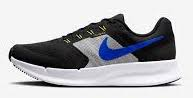
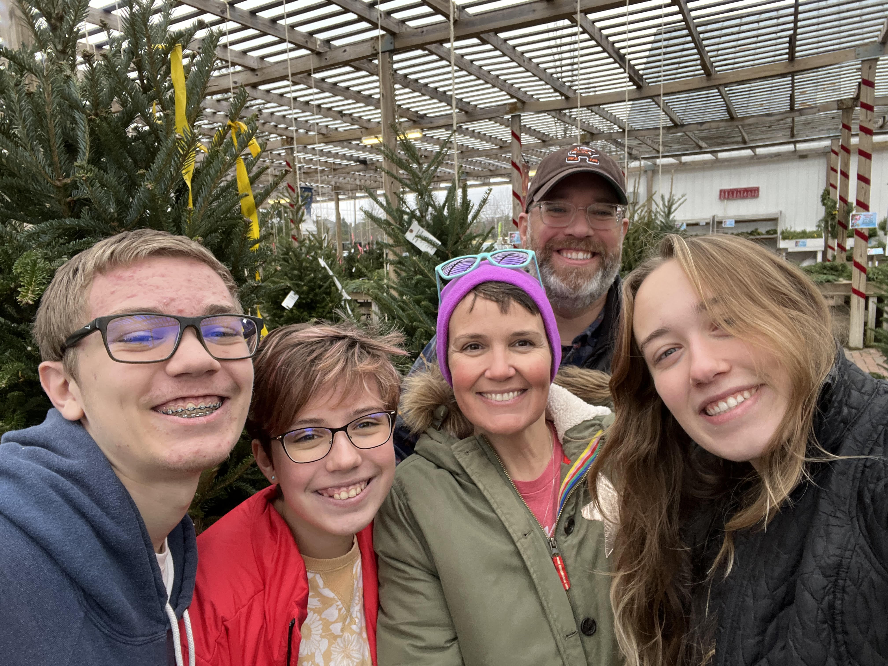

My name is Nathan Schiltz
My Sports
I am 14 years old, and im in 9th grade.
I had played Soccer for over 8 years strait, but I have since quit.
I have also done track, but I have only run for a single year, and I have no intention of running again.
I run cross country for Columbus Academy. And this is my third year running.
My family
I have two dogs, one named Gus, who is nine years old, and the other Fannie, who is 8 years old.
I have two sisters, one in 7th grade, and one in 12th grade, and she goes to Columbus Academy.
(This is my family shopping for Christmas trees)
About Myself
I enjoy listening to music, but I dont have a favorite artist, although I do like 80's or 90's music.
I enjoy reading and watching shows in my free time.
My favorite school subject would probably been either math, or computer science.